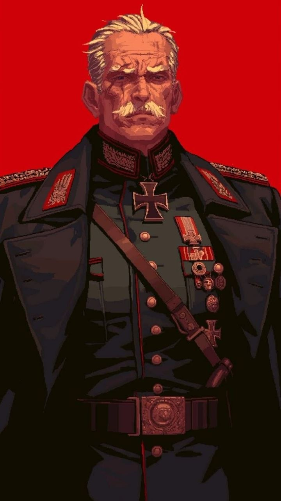
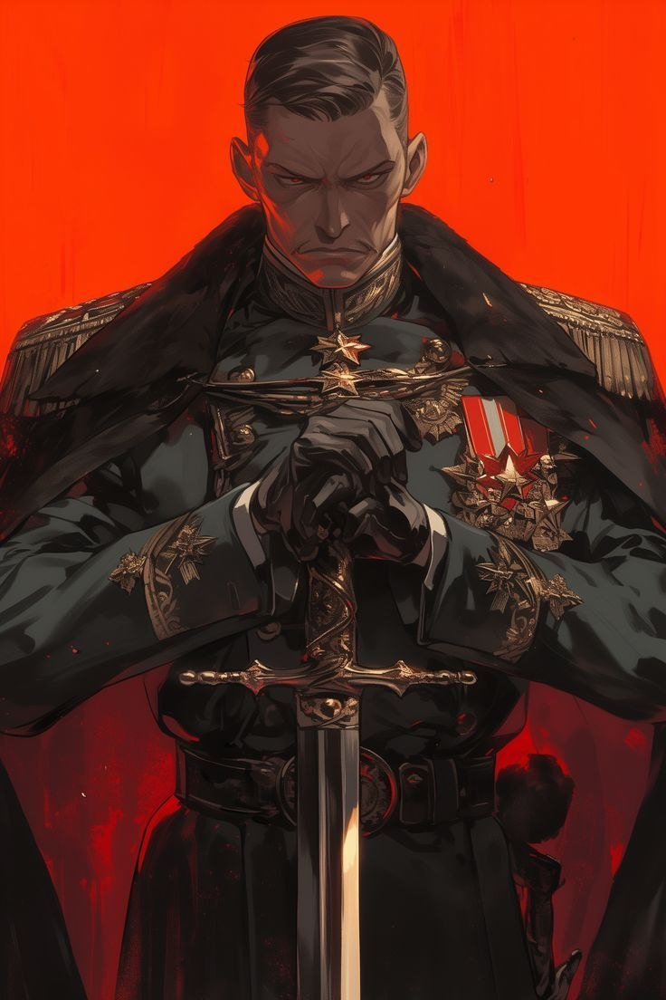
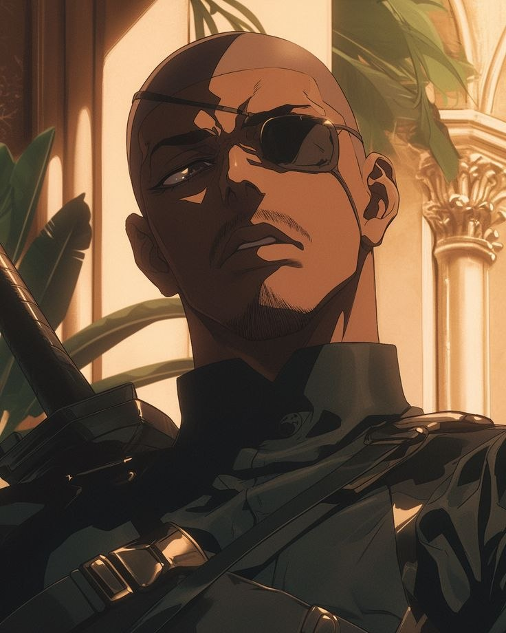

🧬 Reinland
Ordem absoluta. Controle total. Um reino onde tudo… e todos… têm um lugar definido.

📜 Sobre o Reino
Reinland é um reino altamente militarizado, onde a supremacia humana define a estrutura da sociedade. Outras raças são marginalizadas ou reduzidas à servidão, enquanto até mesmo humanos considerados “imperfeitos” enfrentam rejeição. Disciplina, obediência e força são valores centrais. Desde cedo, a população é educada para seguir os ideais do regime, criando uma sociedade uniforme — e profundamente controlada. Por trás dessa aparência organizada, existe um ambiente de medo silencioso.
🏛️ Sistema de Controle
Reinland é governado por um líder supremo conhecido como Führer, cuja autoridade é absoluta. O regime controla todos os aspectos da vida, incluindo educação, produção e organização social. A militarização é incentivada desde a infância, com escolas voltadas para formação ideológica e combate. A economia é sustentada por produção agrícola e industrial, com forte uso de mão de obra escravizada de outras raças. Centros de pesquisa — tanto científicos quanto arcanos — também fazem parte do sistema, frequentemente operando sem limites éticos. A expansão territorial é um dos principais objetivos do reino, e há rumores de influência indireta em outras nações. Qualquer forma de oposição é proibida, embora existam grupos que resistem em segredo.
📍 Locais Importantes
- • Monte Branco — A capital do reino, construída nas encostas de uma montanha. Marcada por arquitetura imponente em pedra clara, abriga monumentos dedicados a figuras importantes da ideologia purista.
- • Cinzeta — Centro de produção agrícola e industrial. A maior parte do trabalho é realizada por escravos, e também abriga instalações de pesquisa onde experimentos são conduzidos sem limites éticos.
- • Cidade Pura — Um dos locais mais restritos do reino. A entrada de não humanos é proibida, sendo considerada um espaço simbólico da ideologia dominante. Lá vivem estudiosos e líderes do pensamento purista.
👥 Personagens Importantes

👑 Albrecht Vornstahl
Líder Supremo • Führer
Líder absoluto de Reinland, Albrecht governa com autoridade total. Frio e calculista, construiu um regime baseado na ideia de superioridade humana e controle completo da sociedade.
Seus planos de expansão permanecem envoltos em mistério, mas sua ideologia é clara — e extremamente perigosa.
Para seus seguidores, um visionário… para o mundo, uma ameaça crescente.

⚔️ Kaos Draeven
Mão Direita do Führer
Executor direto da vontade do Führer, Kaos é conhecido por sua eficiência brutal. Não questiona ordens — apenas as cumpre com precisão e violência.
Temido até mesmo dentro do próprio exército, acredita fielmente na supremacia humana e vê qualquer oposição como algo que deve ser eliminado.
Onde Kaos aparece… o medo segue.

🕊️ Erik Halven
Revolucionário Traidor
Antigo membro do regime, Erik se tornou o maior inimigo interno de Reinland após ajudar escravos a fugirem do sistema.
Hoje, atua nas sombras liderando uma resistência silenciosa, espalhando ideias perigosas para o regime… e esperança para os oprimidos.
Para ele, o sistema não protege… ele destrói.